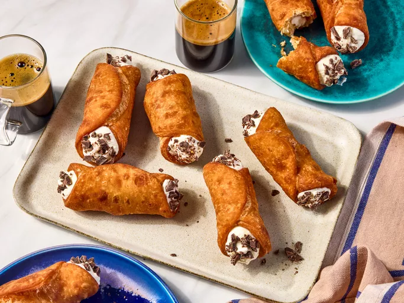

Cannoli
Home

Description
Cannoli are Italian pastries consisting of tube-shaped shells filled with a sweet, creamy filling, often containing ricotta cheese.
Ingredients
- 2 cups all-purpose flour
- 1 tablespoon sugar
- 1/2 teaspoon salt
- 3 tablespoons unsalted butter, softened
- 1 egg, beaten
- 1/4 cup white wine or vinegar
- Oil for frying
- 1 ½ cups ricotta cheese
- 1/2 cup powdered sugar
- 1 teaspoon vanilla extract
- Chocolate chips or candied fruit for garnish (optional)
Steps
- In a bowl, mix flour, sugar, and salt. Add butter and mix until crumbly.
- Add the beaten egg and wine/vinegar. Knead until smooth. Wrap in plastic wrap and refrigerate for at least 30 minutes.
- Roll out the dough thinly and cut into circles. Wrap around cannoli tubes and seal edges with water.
- Heat oil in a deep pan. Fry the shells until golden brown. Remove and drain on paper towels.
- In a bowl, mix ricotta cheese, powdered sugar, and vanilla until smooth.
- Fill the cooled shells with the ricotta mixture using a piping bag.
- Garnish with chocolate chips or candied fruit if desired. Serve immediately.